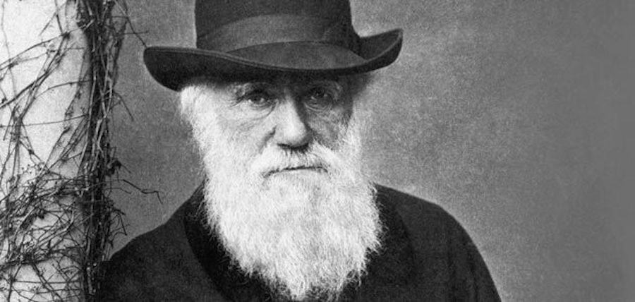

Charles Darwin

An 1881 photograph of Charles Darwin
- 1809 - Charles Robert Darwin is born on February 12th in Shrewsbury, England.
- 1817 - Begins studying at Unitarian dy school in Shrewsbury. In the same year, his mother dies.
- 1825 - Begins studying at the University of Edinburgh with his brother. Registers for medical courses, but eventually leaves two years later without a degree.
- 1828 - Enrolls in Christ's College in Cambridge and eventually earns his ordinary degree in 1831, coming in 10th of 178 students on his final examinations.
- 1831 - Sets sail on the Beagle on December 27th.
- 1837 - Reads his first scientific paper 'Observations... on the Coast of Chile' to the Geological Society of London.
- 1851 - Eldest daughter Annie dies of fever on March 23rd, at age 10.
- 1859 - Publishes On The Origin of Species by Means of Natural Selection, which outlines his theory of evolution.
- 1864 - Darwin is awarded the Copley medal of the Royal Society of London, which is its highest scientific honor.
- 1877 - Receives honorary doctorate of law from Cambridge University.
- 1882 - Dies on April 19th at age 73, after an earlier heart attack and seizures, and is buried in Westminster Abbey.
For more information on Darwin, check out his Wikipedia page.